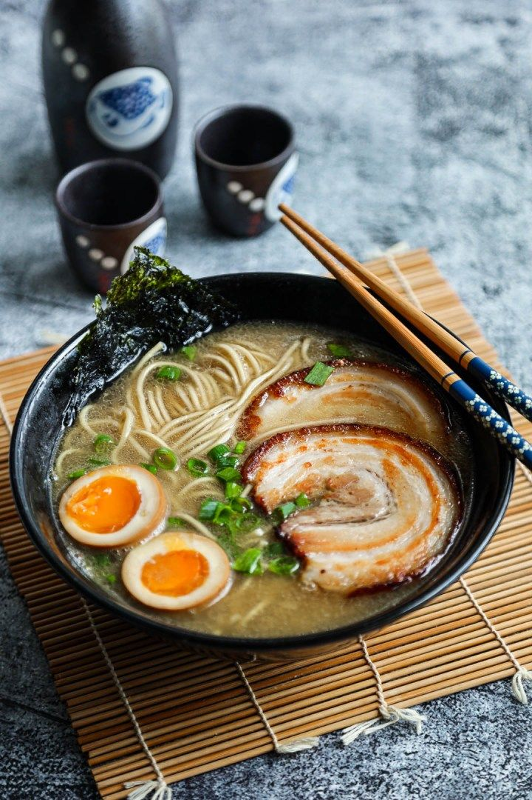

CLASSIC TOKYO RAMEN 醤油ラーメン
Tradicional ramen con caldo a base de pescado y salsa de soya, con un toque de pescado.
Precio: $395 / 200g
PLATOS FUERTES
Tradicional ramen con caldo a base de pescado y salsa de soya, con un toque de pescado.
Precio: $395 / 200g
 OMAKASE NIGIRI おまかせ握り盛り合わせ
OMAKASE NIGIRI おまかせ握り盛り合わせ
Nigiri mixto del día.
$695 / 12pzs
Roastbeef de wagyu importado de japón con su jugo.
Precio: $590 / 180g
 SASHIMI TEISHOKU 刺身定食
SASHIMI TEISHOKU 刺身定食
Mixto de sashimi fresca del día, acompañada de tempura.
Precio: $575 / 200g
Carne de wagyu preparado en salsa dulce de roya con negi, shirataki, hoja de crisantemo, tofu, achicoria y shitake.
Precio: $1,560 / 260g
Selección de camarones y vegetales fritos en una ligera y crujiente tempura, servidos con salsa tentsuyu.
Precio: $520 / 8pzs
Frito de pollo marinado de salsa de soya, ajo y jengibre.
Precio: $290 / 200g
 WAGYU CHILI 和牛チリ
WAGYU CHILI 和牛チリ
Rebanada de wagyu importado de japón con salsa de anguila y poro frito.
Precio: $430 / 65g
Anguila de río glaseada a la parrilla con una salsa dulce a base de soya, servida sobre una cama de arroz.
Precio: $780 / 150g